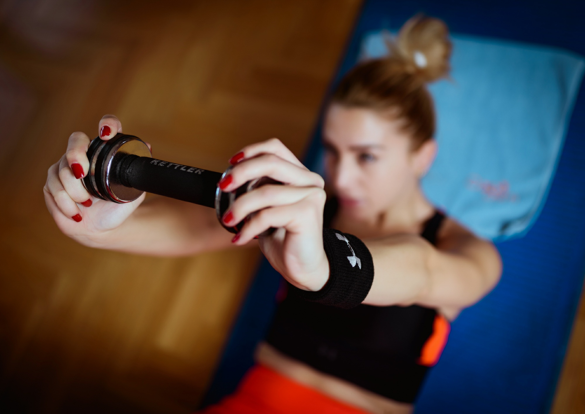
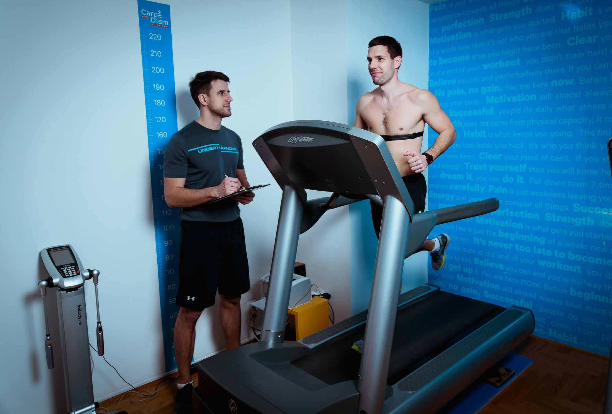

Mi smo spremni da Vam pomognemo. Nas na našem putu vodi i podstiče osećaj velike ispunjenosti i zadovoljstva svaki put kada pomognemo nekome da ostvari svoje snove ili barem reši svoje probleme. Svesni smo koliko patnje i bola može da stvori bezuspešan pokušaj da se telesna slabost i disfunkcionalnost podignu na viši nivo. Mi smo sigurni da svako može da poboljša svoju formu i svoj izgled uz pomoć koju smo mi spremni bezrezervno da pružimo sa jedinom željom da svako iz našeg studija izađe srećniji, zdraviji, jači i sa mnogo više samopouzdanja nego što je imao do tada. Mi smo tu da vas saslušamo, a zatim predložimo najefikasniji trenažni proces, kako bismo postigli najbolje moguće rezultate. Ciljeve i zadatke zajedno definišemo a polazimo od vaših individualnih potreba kao što su pre svega poboljšanje vašeg zdravlja, kondicije i naravno fizičkog izgleda. Pažljivo razmatramo svaki pojedini slučaj. Izdvajamo vreme da osmislimo pristup, metode i sredstva za rešavanje svakog problema. Mi ne stojimo po strani sa prekrštenim rukama i govorimo samo šta je sledeća vežba, već ulazimo u svaki aspekt vašeg života u koji ste spremni da nas pustite. Pričamo sa Vama o svakoj lošoj navici koja ugrožava Vaše zdravlje i nudimo pomoć i predloge kako da je promenite.
Propisujemo vam zdravu i izbalansiranu ishranu, koncipiranu prema vašim potrebama. Adekvatna ishrana je pola posla pa tome pridajemo dosta pažnje. Sarađujemo sa profesionalnom nutricionistkinjom koja će za Vas da sastavi ishranu prilagođenu kako Vašim potrebama tako i Vašem stilu života, dnevnim navikama i obavezama. Recepti za nutritivne obroke koji su pri tome laki za pripremu su ono što Vam nudimo. Radimo na tome da Vas pri sprovođenju naših zamisli u delo što manje opteretimo jer znamo da je u današnje vreme kada svi brzo živimo svaki minut bitan i da je luksus izdvajati vreme na pripremu kompikovanih obroka. Mi živimo život koji propagiramo. Verujemo u zdrav stil života i uživamo sprovodeći ga u delo svesni da se zdravlje i dugovečnost nalaze u telesnoj aktivnosti i odabranoj hrani. Naši treneri su iskusni sportisti koji bez ikakve zadrške dele svoje znanje i iskustvo. Pre svega su visoko školovani i opšte obrazovani, sa diplomama Fakulteta sporta i fizičkog vaspitanja ali i mnogobrojnim sertifikatima i diplomama sa različitih kurseva i seminara.
U centru našeg interesovanja se nalazi menjanje strukture telesnog sastava (korigovanje odnosa mišićne mase i masnog tkiva u korist ovog prvog), vraćanje tela u posturalni balans, jačanje slabih i nerazvijenih mišićnih grupa kao i podizanje nivoa funkcionalnih kapaciteta na najviši mogući nivo. Pored ovoga trudimo se da Vam prenesemo našu filozofiju, razmišljanje, navike kako bi što pre usvojili aktivan stil života kao naviku a ne samo kao obavezu. Trudimo se da Vam ukažemo na draži fizičke aktivnosti i na sve benefite koje ona nosi sa sobom.
Nudimo vam vežbanje u prijatnoj, intimnoj i radnoj atmosferi uz korišćenje najmodernije sportske opreme i trenažera. Pravimo uslove za sprovođenje u delo precizno osmišljenih i odmerenih programa. Trudimo se da vežbanje učinimo maksimalno prijatnim da svako u njemu može da uživa bez obzira na formu, trenutno stanje i na to kako se inače snalazi u sprovođenju fizičkih zadataka u delo.
Mi brinemo o vama, o vašem zdravlju i vašim rezultatima. Kao naši prijatelji i klijenti vi ste predmet naših analiza i tema naših razgovora. Vodimo računa o svakom detalju. Ne ostavljamo Vas same ni u jednom bitnom momentu jer svoj posao doživljavamo vrlo ozbiljno. Svaki pokret nam je od velikog značaja i doživljavamo ga kao jednu dozu leka, a znamo da lek samo u optimalnoj dozi void ka izlečenju. Sa nama ni u jednom trenutku niste prepušteni sami sebi, sve poteškoće zajednički prevazilazimo.